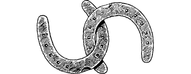

75
In the twilight before dawn, you catch sight of the River Kinam less than a mile away to the west. You scan the surrounding landscape and note several small tracks (which lead to tiny farmsteads dotted around the vast plain) converging at a hamlet which nestles in a bend of this great river. During the past hour your horse has developed a slight limp, and a cursory look at his affected leg reveals that he has thrown a shoe. You know that unless you replace the missing shoe, and soon, he will be too lame to carry you further. Reluctantly, you decide to enter the hamlet and go in search of a blacksmith.
A signpost at the entrance to the hamlet announces its name: Kalma. It is a quiet, sleepy sort of place that in many ways reminds you of Dage, the Sommlending village where you were born and where you spent your early years. Near the centre of this humble village you discover a smithy where, even at this early hour, you can hear the sound of a hammer beating iron. You tether your horse to a rail alongside a moth-eaten old donkey, and call out for the blacksmith.
‘In ’ere,’ comes the curt reply. On entering you discover a tall, broad-shouldered man clad in a leather apron, busily shaping a horseshoe on an anvil.
{kind=link}

‘My steed has shed a shoe,’ you say. ‘Can you replace it?’
‘Aye,’ he says, without bothering to look up from his work, ‘but it’ll cost you 20 Lune. In cash, and in advance, if you please.’
If you have sufficient cash to pay the blacksmith (20 Lune = 5 Gold Crowns), turn to 234.
If you do not, turn to 259.